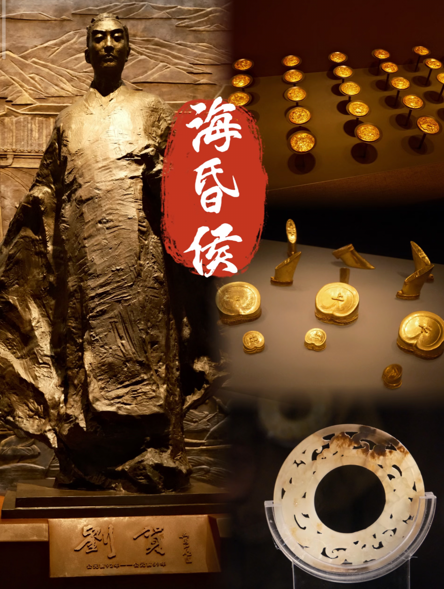
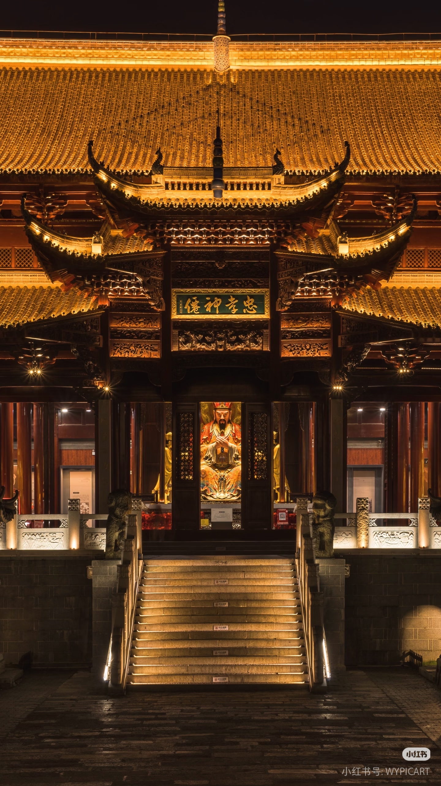
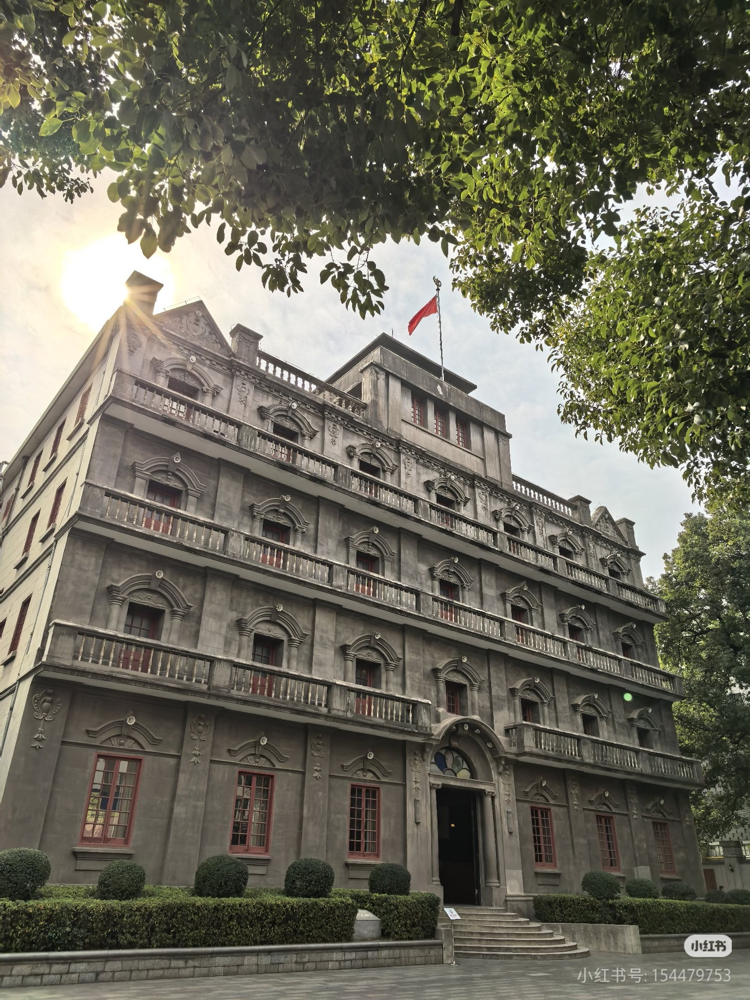

豫章
公元前 202 年 · 灌婴筑城
千年
↓ 向下滑动 · 推开历史屏风
四朝屏风 · 一展千年
汉
豫章启封
前202年

海昏侯国 · 大汉气象
灌婴筑城，豫章始立。海昏侯墓出土金器万件，实证"北有兵马俑，南有海昏侯"的惊世传奇。
唐
滕阁临江
653年

滕王高阁 · 盛唐风华
滕王李元婴建阁，王勃一篇《滕王阁序》传颂千古。"落霞与孤鹜齐飞，秋水共长天一色"，写尽洪都盛景。
明
洪都烟火
1363年

万寿宫 · 商贾云集
明时南昌万寿宫香火鼎盛，江右商帮以此为精神地标，赣地烟火气与商贸繁荣交织成洪都新貌。
近代
八一烽火
1927年

八一枪声 · 英雄城
1927年8月1日，南昌城头一声枪响，人民军队在此诞生。红色基因融入城市血脉，英雄城名震天下。
🏛️ 海昏侯 · 惊世大发现
📜 历代文人 · 咏南昌诗词数量
数据综合自《豫章诗话》及南昌历代方志，作品数量为约数，体现文化脉络。
📖 历代名家与南昌诗词
| 朝代 | 代表文人 | 作品数量 | 代表作 |
|---|---|---|---|
| 汉 | 张衡、王粲 | 8 | 《南都赋》（提及豫章） |
| 唐 | 王勃、李白、白居易 | 42 | 《滕王阁序》 |
| 宋 | 王安石、黄庭坚、杨万里 | 26 | 《登滕王阁》 |
| 明 | 汤显祖、王阳明 | 31 | 《滕王阁宴集》 |
| 近代 | 陈独秀、郭沫若 | 15 | 《八一纪念》 |